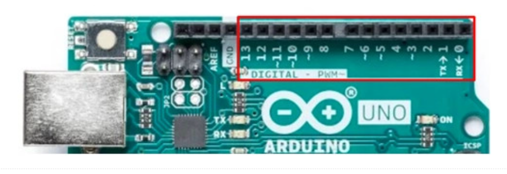
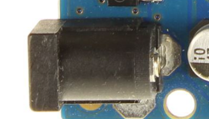

Ya conoces qué reto te proponemos alcanzar y te acabamos de plantear una actividad que te acercará a la meta.
Veamos lo que tenemos en nuestra placa:
1.- Pines digitales.
| Los pines digitales son las conexiones digitales de los dispositivos conectados en la placa. La placa de Arduino cuenta con 14 pines digitales, que van del 0 al 13. Los pines digitales de Arduino pueden ser usados tanto de entrada como de salida; y solo entienden dos valores: 0-1, o lo que es lo mismo, 0V o 5V. |
 |
2.- Pines analógicos.
| Los pines analógicos pueden medir valores intermedios entre 0V y 5V. Algunos pines digitales, tienen el símbolo “~” en la placa, este símbolo indica que pueden ser utilizados también como pines analógicos. |
|
3.- Pines alimentación sensores.
|
Estos pines permiten alimentar componentes externos, concretamente uno con 5V y otro con 3,3V. También dispone de pines de tierra (GND==Ground).
La zona de alimentación al costado de las entradas analógicas, permite dos cosas. Una, distribuir alimentación desde el Arduino para algunos sensores o para control y dos, alimentar la tarjeta.
|
|
4.- Microcontrolador de comunicaciones.
| Se encarga de gestionar las comunicaciones con todo lo que se conecta a la placa. |
|
5.- Microcontrolador de programación.
| Es el cerebro de la placa, donde ésta almacena el programa que tiene que ejecutar y el que lo ejecuta. El microcontrolador de la placa se programa utilizando el IDE (Entorno de Desarrollo Integrado) de programación gratuito de Arduino. |
|
6.- Botón Reset.
| Este botón permite reiniciar el programa que se ha cargado en el microcontrolador interrumpiendo la ejecución actual. No lo borra. |
|
7.- Puerto USB.
|
Es el puerto mediante el cual se comunica con la placa de Arduino. Sus funciones principales son:
- Alimentación
- Cargar los programas en el microcontrolador
- Envío de información desde la placa al ordenador
|
|
8.- Conector de conexión.
| Arduino dispone de un puerto de alimentación externo que nos permitirá hacer funcionar la placa sin utilizar un ordenador. No se debe alimentar la placa con mas voltaje del que soporta, ya que se podría dañar. Se recomienda alimentarla entre 7V y 12V |
 |
9.- LED incorporado.
|
Arduino UNO tiene un pin digital (13) conectado a un led de la propia placa de tal forma que se puede controlar ese pin desde el código. En la placa el led suele ir etiquetado con una «L». En Arduino UNO es el pin digital 13. Es una forma cómoda de tener un led de señalización sin tener que montar nada.
Ojo, para poder usarlo lo primero es estar seguro que no se usa ese pin para otra cosa.
|
|